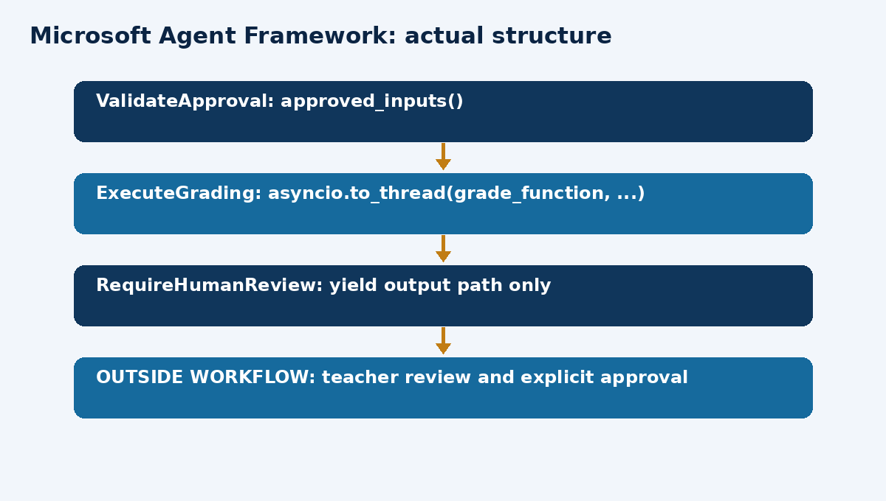
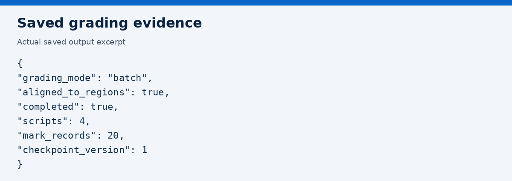

Agent skills and Microsoft Agent Framework: two different orchestration layers
Part 6 of 8 · For agent and application developers

An agent skill and an Agent Framework workflow solve different problems.
SKILL.md guides the host assistant's interpretation of a teacher request,
workspace inspection, tool selection and human handoffs. Microsoft Agent
Framework executes a specific Python graph after the grading operation is
selected and its command-level prerequisites are satisfied.
The actual skill describes the seam:
`grade` defaults to `--orchestrator agent-framework`: real Executor/WorkflowBuilder
validation → existing grading → human-review boundary. `workflow-grade` forces it;
`--orchestrator python` is the direct fallback. No autonomous approval or email.
| Layer | Input | Responsibility | Not its responsibility |
|---|---|---|---|
| Skill-guided assistant | Teacher intent and workspace artifacts | Choose tools, explain results, request decisions | Invent approval or replace application validation |
| Python CLI | Explicit paths, target and flags | Validate/preview the selected operation and check consent flag | Prove consent was genuinely given in chat |
| Agent Framework | Typed "grade" control message and captured configuration |
Sequence validation, engine execution and draft output | Load SKILL.md, negotiate marks or approve delivery |
| Azure grading deployment | Rubric text and PNG crops | Propose structured transcription/marks/flags | Approve its own output |
The inspected workflow.py does not parse a skill file or create a conversational
planning agent. The integration is the assistant invoking the Python tool whose
default route uses the Framework. A host-independent Python caller can execute
the same workflow without loading a skill; it still faces the application gates.
The workflow is deliberately small: validate inputs, execute the existing grading engine, and return a draft location for human review. Pricing and review policy remain application responsibilities.
This article shows the actual code and the saved artifacts the grading engine produces. No framework event log was captured for the existing example, so those artifacts are not presented as proof of which orchestrator ran historically.
Follow the Python seam from skill-selected tool to Framework
This is the actual CLI routing excerpt, after preview and the --confirm-cost
check. The variables come from parsed arguments and validated exam configuration:
execute = grade_exam
options = {}
if args.orchestrator == "agent-framework":
from .workflow import run_grading_workflow
execute = run_grading_workflow
options["grade_function"] = grade_exam
output = execute(
config, path.parent, path, args.model_config, args.endpoint.strip(),
args.api_version.strip(), summary, mode=mode, batch_concurrency=concurrency, **options,
)
The first assignment selects direct Python execution provisionally. The if
changes the callable to the Framework wrapper; it does not invoke grading yet.
options["grade_function"] supplies the same engine to the wrapper, preserving
behavior between routes. The final call passes structured configuration and
paths, not the teacher's raw sentence. output is the draft folder returned
by either route. Cost consent is checked before this excerpt; the host assistant
must not invent that consent just because it can supply a flag.
The workflow's input and output contract
The workflow imports:
from agent_framework import Executor, WorkflowBuilder, WorkflowContext, handler
Its input is a grading request with the configured exam context captured by the builder. Its output is one path to generated grading artifacts.

Figure 1. Diagram of actual workflow structure, not a runtime event visualization.
The last box is particularly important. “Human review boundary” means the automated workflow stops without granting approval. It does not mean the Executor waits for a teacher response and persists that approval.
The validation Executor forwards only after Python validation
The first Executor's handler calls application validation:
class ValidateApproval(Executor):
@handler
async def process(self, request: str, ctx: WorkflowContext[str]) -> None:
approved_inputs(config, config_dir, config_path)
await ctx.send_message(request)
Output: the request is forwarded only if validation returns successfully. A failing validation stops this path before the grading Executor is invoked.
@handler identifies the method as a Framework handler. Its typed request
and WorkflowContext[str] describe the message path. approved_inputs() runs
first; an exception prevents ctx.send_message() from forwarding the request.
The Framework supplies orchestration primitives, while the application supplies
the rubric/region approval semantics. Adding an Executor does not create those
policies or rerun the preparation scan check.
Part 1's actual scan warning is related but belongs to scan checking; do not label it as a captured ValidateApproval event.
The execution Executor bridges async orchestration and sync Python
The second Executor uses:
output = await asyncio.to_thread(
grade_function,
config, config_dir, config_path, model_config_path,
endpoint, api_version, summary,
mode=mode,
batch_concurrency=batch_concurrency,
)
await ctx.send_message(str(output))
This is a reformatted source excerpt. asyncio.to_thread bridges the existing synchronous grading function into the asynchronous handler. It does not transform each rubric rule into a separate agent or remove the engine's own concurrency and transport constraints.
The engine writes outputs such as:
grading/
manifest.json
results.json
review.xlsx
images/
telemetry/

Figure 2. Existing engine output: four scripts and twenty question-mark records. This is not a framework execution trace.
A practical benefit is reuse: direct Python orchestration and the framework path call the same engine, preserving the review/checkpoint model.
The terminal Executor yields a path, not a human decision
The final Executor does this:
class RequireHumanReview(Executor):
@handler
async def process(self, output: str, ctx: WorkflowContext[Never, str]) -> None:
await ctx.yield_output(output)
Despite the class name, there is no human response wait in that handler. It yields the draft output path. Review and approval occur through separate application operations.
Suggested operator prompt
Use the handwriting-grading skill to prepare the approved grading workflow.
Run it only after I confirm cost.
When it finishes, show the draft output location and flagged answers.
Do not approve scores, generate a delivery approval or send email.
This is a suggested assistant request, not the model prompt used to grade handwriting. The assistant must still respect the explicit consent and local approval gates.
Explicit edges replace an imagined autonomous debate
The builder creates these edges:
return (
WorkflowBuilder(
start_executor=validate,
name="human-reviewed-azure-grading",
max_iterations=4,
)
.add_edge(validate, execute)
.add_edge(execute, review)
.build()
)
The wrapper runs the workflow, requires exactly one output, and converts that output back to Path.
The default CLI selects the framework path. --orchestrator python selects the direct implementation; workflow-grade forces the workflow route. These are application choices, not two different grading quality guarantees.
Evidence limitation: the saved manifest records grading mode, not a complete framework event history. This package includes the exact inspected workflow.py, but does not claim a new paid workflow run.
Technical walkthrough: the complete workflow and a real offline execution
A control message is not an LLM prompt
The wrapper passes the literal string "grade" to workflow.run(). That string
is a typed control message between Executors, not a system prompt asking a model
to invent a plan. The handwriting prompt is constructed inside the grading engine
as shown in Part 5. There is no hidden "three agents debate marks" prompt in this
workflow. The suggested operator prompt above tells the assistant which approved
operation to request; it does not grant approval or alter Executor authority.
The complete source factory
The imports are asyncio, Path, Never, the Framework types shown above,
and approved_inputs/grade_exam from the grading module. Here is the complete
factory, reformatted from the inspected source:
def build_grading_workflow(config, config_dir, config_path, model_config_path,
endpoint, api_version, summary, *, mode="batch",
batch_concurrency=3, grade_function=grade_exam):
class ValidateApproval(Executor):
@handler
async def process(self, request: str, ctx: WorkflowContext[str]) -> None:
approved_inputs(config, config_dir, config_path)
await ctx.send_message(request)
class ExecuteGrading(Executor):
@handler
async def process(self, request: str, ctx: WorkflowContext[str]) -> None:
output = await asyncio.to_thread(
grade_function, config, config_dir, config_path, model_config_path,
endpoint, api_version, summary,
mode=mode, batch_concurrency=batch_concurrency,
)
await ctx.send_message(str(output))
class RequireHumanReview(Executor):
@handler
async def process(self, output: str, ctx: WorkflowContext[Never, str]) -> None:
await ctx.yield_output(output)
validate = ValidateApproval(id="validate-human-approvals")
execute = ExecuteGrading(id="grade-approved-crops")
review = RequireHumanReview(id="await-human-score-review")
return (
WorkflowBuilder(
start_executor=validate, name="human-reviewed-azure-grading",
max_iterations=4,
)
.add_edge(validate, execute)
.add_edge(execute, review)
.build()
)
The nested classes capture configuration from the factory. Typed handlers forward
strings along explicit edges. asyncio.to_thread() runs the synchronous engine
without blocking the handler's event loop; question-level concurrency still
belongs to that engine. max_iterations=4 is a workflow bound, not a count of
billable grading requests.
Each Executor(id=...) has a stable identity in the graph; those IDs are not
Azure deployment names or named LLM personas. add_edge(validate, execute)
permits the validated control message to reach execution, and the second edge
passes the draft path to the terminal handler. build() constructs that graph.
The selected grade_function owns the actual model calls and checkpoint work.
This explains why changing the orchestration route does not itself change the
grading prompt shown in Part 5.
The terminal handler uses WorkflowContext[Never, str]: it yields a string output
and does not send another workflow message. The wrapper makes the terminal
contract concrete:
def run_grading_workflow(*args, **kwargs):
async def run():
workflow = build_grading_workflow(*args, **kwargs)
events = await workflow.run("grade")
outputs = events.get_outputs()
if len(outputs) != 1:
raise ValueError("Grading workflow did not produce exactly one output")
return Path(outputs[0])
return asyncio.run(run())
An exception from validation prevents forwarding the control message. A successful engine returns a path, not an approval. The exactly-one-output check catches an unexpected terminal result; it does not establish educational correctness.
Run the real Framework without sending any student data
To make the sequence observable, we ran the following offline synthetic smoke test using the installed locked Framework. It replaces validation with a test stub and supplies a local grading stub; it is not a way to bypass approvals for a real exam. The Azure client constructor is explicitly forbidden in the test. No original exam, model configuration or grading output is opened or changed.
from pathlib import Path
from tempfile import TemporaryDirectory
from unittest.mock import patch
from handwriting_grader.workflow import run_grading_workflow
order = []
def synthetic_validation(*args):
order.append("validate")
def grading_stub(*args, **kwargs):
order.append("grade_stub")
return draft
with TemporaryDirectory() as directory:
root = Path(directory)
draft = root / "draft"
draft.mkdir()
with (
patch("handwriting_grader.workflow.approved_inputs", side_effect=synthetic_validation) as validation,
patch("handwriting_grader.grading.AzureClient",
side_effect=AssertionError("Azure clients are forbidden in this offline example")) as azure,
):
output = run_grading_workflow(
{}, root, root / "synthetic-exam.yaml", root / "synthetic-models.yaml",
"https://synthetic.openai.azure.com", "v1", {"students": 4},
grade_function=grading_stub,
)
assert order == ["validate", "grade_stub"] and output == draft
azure.assert_not_called()
print("Execution order:", " -> ".join(order))
print("Validation calls:", validation.call_count)
print("Workflow output:", output.name)
print("Azure clients constructed:", azure.call_count)
Run the included copy from the grader checkout's locked environment:
uv run --frozen python docs/blog-series/snippets/offline-framework-smoke.py
Actual captured output from this new offline exercise:
Execution order: validate -> grade_stub
Validation calls: 1
Workflow output: draft
Azure clients constructed: 0
The complete script is included in snippets/offline-framework-smoke.py, and the
captured output in observed/offline-framework-smoke.txt. The real Framework
executed the typed sequence and terminal output contract. The stub created an
empty synthetic draft directory; it did not grade four students. This is
instrumented offline evidence, not an original-exam Framework event log.
The patch() contexts replace just the validator and Azure constructor for this
synthetic test. The injected grading_stub records its position and returns the
temporary directory. Assertions check order and path identity; the mock's
assert_not_called() fails if an Azure client is constructed. The four printed
lines are actual instrumented output. This tests the runtime graph, not the
assistant's skill selection, real approval validation or handwriting quality.
Hand the draft back to the skill-guided assistant and teacher
After receiving the draft path, the assistant returns to the skill's review guidance: inspect failures/flags, explain choices and offer the teacher's review interface. There is no automatic transition to report delivery. The saved workbook includes flagged manual-review fields, and the read-only diagnostic explicitly retains the human-review requirement.

Figure 3. Actual saved review records, not evidence that the final Executor granted approval.
Deployment hygiene matters too. Use the reviewed lockfile and consult current advisories before changing framework dependencies. A historical pre-incident pin is not a permanent safety certification.
The architectural lesson is straightforward: use the framework to make sequencing visible, but keep correctness, consent, pricing and release rules explicit in application code. A modest workflow that accurately describes its authority is preferable to a spectacular diagram that overstates it.
Next: pricing and data boundaries before AI calls.
Implementation reference: complete workflow source at the inspected revision.